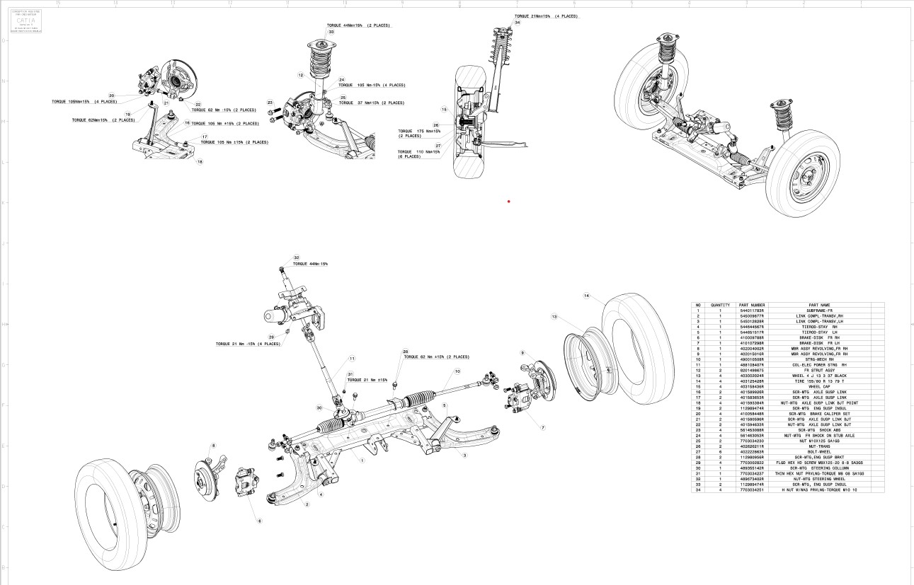

System-Level Engineering
Multi-Body Suspension Assemblies
Select a subsystem tab below to analyze the visual clearances, multi-body kinematics, exploded layouts, and specifications for front and rear axle dynamic systems.

Front Suspension Kinematic Model
Front Configuration
Double-Wishbone Suspension Component Integration
This structural front corner assembly maps out standard double-wishbone layouts designed to deliver precise camber change curves and roll center parameters. Designed and mapped to subframe structures with physical clearance validations during full travel sweeps.
Key Design Deliverables:
- Material Performance: Optimized lightweight cast aluminum unsprung upright structures to reduce rotational mass.
- Interference Sweeps: Validated that steering paths stay clear of dynamic suspension links through high-degree turns.
Subsystem Drafting & Layout
Sheet 01 / Front Chassis
Exploded View & CATIA Drafting Integration

CATIA V5 Drafting Layout
Front Assembly BOM
Part List ExtractA summarized tracking of front design layers structured within our digital component design hierarchy.
1. Front Subframe Grounding
1x Structural
2. Front Strut Assembly
2x Damping
3. Lower Control A-Arm Linkage
2x Kinematic
4. Steering Gear Assembly
1x Directional
5. Wheel Knuckle & Rotor Assembly
2x Unsprung
Drafting Standards Applied
Standard: ASME Y14.5
Projection: 3rd Angle
Units: Metric (mm)
Threads: ISO Metric